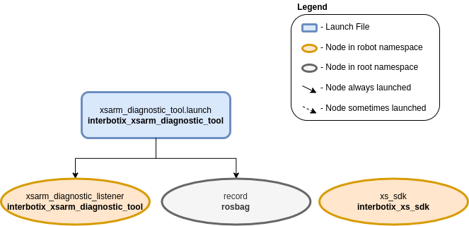

Arm Diagnostic Listener
 View Package on GitHub
View Package on GitHub
Overview
The diagnostic listener is intended to get joint information like present temperature from the
robot while it executes any commanded trajectory. This is useful for when you would like the robot
to move through a more complex motion than the more basic Diagnostic Tool is able to provide. The
Listener subscribes to the joint states of the configured joints, periodically retrieves the
Present_Temperature register from the DYNAMIXEL servos, and publishes the data to the namespaced
temperatures/joint_group topic.
Structure
As shown above, the interbotix_xsarm_diagnostic_tool package relies on the existence of the interbotix_xs_sdk package. To get pointers about the nodes in the that package, please look at its README. The other nodes are described below:
- record - responsible for recording the
/<robot_name>/joint_states, and/<robot_name>/temperatures/joint_grouptopics and saving it to a user-specified bagfile
Usage
To use this package, first configure the listener.yaml file to the joints you wish to observe. The default observe_joint parameters assume that the user is listening to the joints of an X-Series 6DOF arm, say a WidowX-250 6DOF.
Next, launch the control application that you wish to profile the performance of. For example, one could have an application that moves the robot through a complicated trajectory and is not sure if the robot is able to manage the load or movements. The user would launch their application with whatever method the application is deigned for (Python, rosrun, etc.).
The user would then launch this program using the command below, making sure to specify the
bag_name argument.
$ roslaunch interbotix_xsarm_diagnostic_tool xsarm_diagnostic_listener.launch robot_model:=wx250s bag_name:=wx250s_application_diagnostics
Once the control application is done, send the termination signal to the listener by entering Ctrl + C in its terminal.
To convert the rosbag data to a csv file, navigate to the scripts directory. If the ‘bag2csv.py’ program is not yet executable, make it so by typing:
$ chmod a+x bag2csv.py
Next, type:
$ python bag2csv.py wx250s waist wx250s_application_diagnostics.bag wx250s_application_diagnostics.csv
The command is pretty self explanatory - the arguments are the robot name, the name of the joint to be observed, the bagfile name (the program expects it to be located in the ‘bag’ directory), and the desired CSV file name. To better understand how this program works, take a look at bag2csv.py. Then, take a look at the table below to understand the launch file arguments.
| Argument | Description | Default Value |
|---|---|---|
| robot_model | model type of the Interbotix Arm such as ‘wx200’ or ‘rx150’ | “” |
| robot_name | name of the robot (typically equal to robot_model, but could be anything) |
“$(arg robot_model)” |
| listener_config | the file path to the ‘listener config’ YAML file | refer to xsarm_diagnostic_tool.launch |
| bag_name | name of the rosbag for which to save data | “listener_diagnostics” |